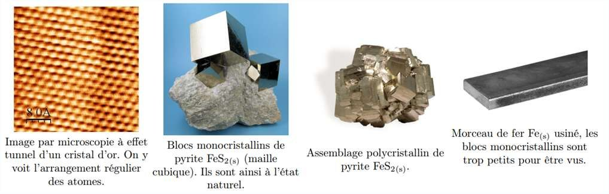
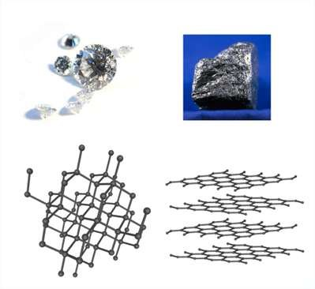
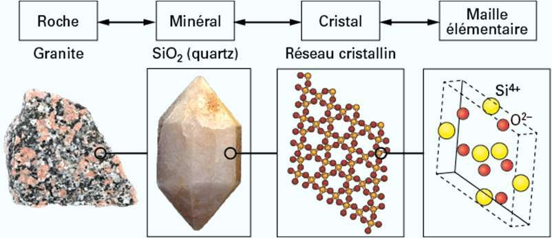
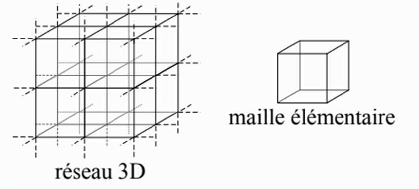
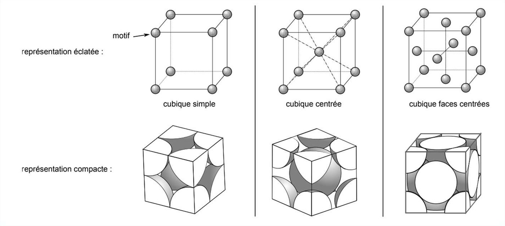
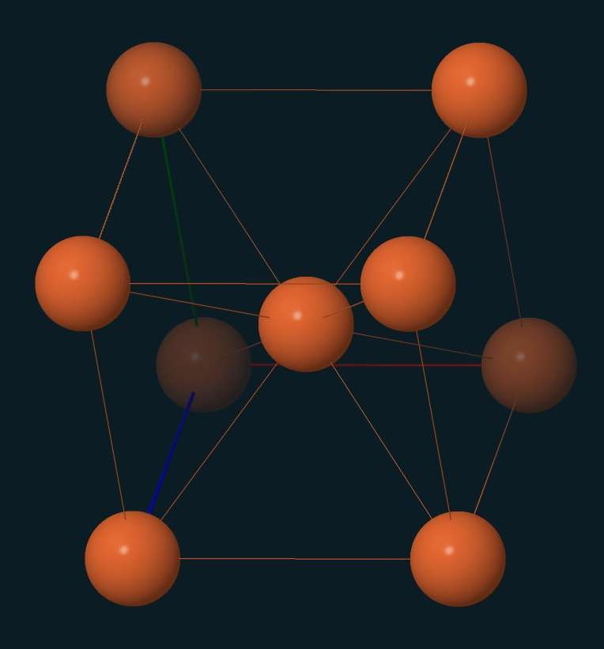
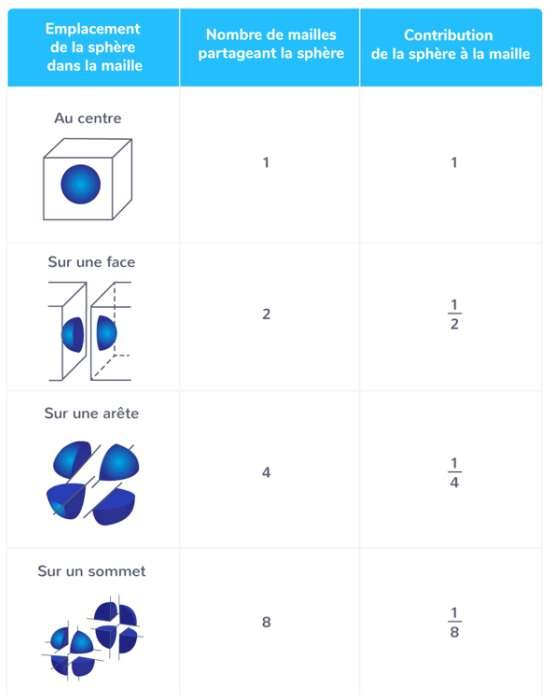
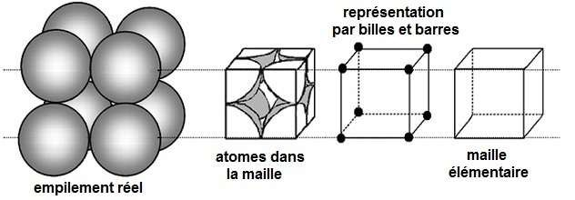
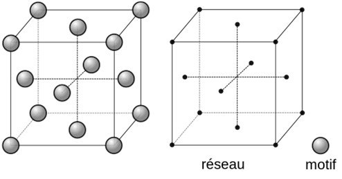

Un caillou, un flocon, un grain de sel, une lame d'acier : la même idée à l'intérieur — un motif minuscule, répété à l'identique des milliards de fois. Il suffit d'un cube et d'un peu de comptage pour en déduire la masse volumique d'un métal.
Comprendre ce qui distingue un solide cristallin des autres, et savoir ce qu'est la brique élémentaire qui, répétée, le construit tout entier.
🎬 La vidéo de découverte du cours (format court).

Un solide cristallin peut exister sous différentes formes cristallines, c'est-à-dire avec une géométrie différente de répétition de ses entités élémentaires. On parle de variétés allotropiques.



Les atomes ou ions qui composent les cristaux sont modélisés par des sphères dures positionnées à différentes positions de la maille élémentaire. Seules certaines mailles cubiques sont au programme cette année :
| Maille | Sigle | Où sont les sphères |
|---|---|---|
| Cubique simple | CS | une sphère sur chaque sommet |
| Cubique centrée | CC | une sphère sur chaque sommet, plus une au centre du cube |
| Cubique faces centrées | CFC | une sphère sur chaque sommet, plus une au centre de chaque face |

Une maille CC de fer semble contenir neuf atomes. Elle en contient deux. Voici pourquoi, et comment on compte.
Chaque maille élémentaire du cristal est composée d'atomes ou d'ions, et il faut être capable de les compter. C'est ce que l'on appelle établir la multiplicité (Z) de la maille.


| Emplacement de la sphère | Nombre de mailles qui la partagent | Contribution à la maille |
|---|---|---|
| Au centre | ||
| Sur une face | ||
| Sur une arête | ||
| Sur un sommet |

Les 8 atomes situés aux sommets du cube contribuent chacun pour 1/8 — chacun d'eux est potentiellement partagé par 8 mailles.

🎬 La vidéo d'entraînement du cours (bouton « S'exercer en vidéo » de la diapositive).
Combien de vide y a-t-il dans un métal ? Et comment retrouver sa masse volumique en partant d'un simple cube.
Le volume total s'exprime simplement en fonction du paramètre de maille a, qui n'est autre que la longueur d'une arête du cube :
Le volume occupé correspond au volume de tous les atomes et ions de la maille : il se calcule en multipliant la multiplicité par le volume d'une sphère.
Dans une maille CS, les sphères se touchent le long d'une arête du cube. On en déduit rapidement :
Dans une maille CFC, les sphères se touchent le long de la diagonale d'une face. On en déduit la relation entre le rayon R et le paramètre de maille a :
🎬 Vidéo de révision sur la compacité (QR code de la diapositive).
Données : matome de fer = 9,35 × 10⁻²⁶ kg · aFe = 2,87 Å = 2,87 × 10⁻¹⁰ m
Les quatre vidéos que porte la dernière diapositive du cours, récupérées par leurs QR codes.
🎬 Le cours en vidéo (bouton « Le cours en vidéo ! »).
🎬 Réviser en vidéo — la masse volumique à partir de la maille.
🎬 Une autre façon d'expliquer (deuxième QR de la diapositive de révision).
🎬 Quatrième lien de la dernière diapositive.